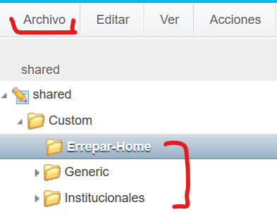
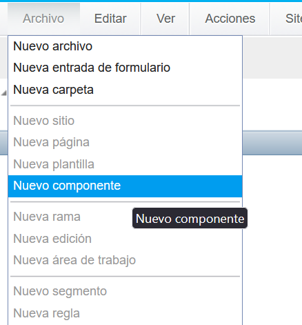
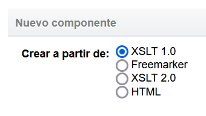
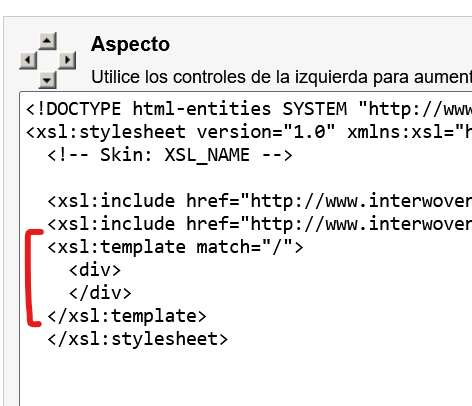

Componentes
Ubicación
Los componentes se localizan en la siguiente ruta de CCPRO:
//iwserver/iwadmin/main/livesite/component/WORKAREA/shared/CustomCrear un componente
- Ir a CCPro
- Dirigirse a la ruta de los componentes
- Seleccionar la carpeta donde se ubicará el componente
-
Con la carpeta seleccionada dirigirse a "Archivo"
 -
Seleccionar "Nuevo componente"
 -
Se abrirá una ventana popup. Seleccionar "XSLT 1.0" y "Siguiente"
 -
Llenar el formulario escribiendo el nombre, descripción y otros datos del componente
-
Definir el HTML del componente. Se incluye el HTML en la sección
"Aspecto" del componente. Para hacerlo hay dos alternativas.
-
Recomendada:
Idealmente importar un template XSL que contenga el HTML del componente Ver sección Templates (.xsl):
Este es un ejemplo real del componente articleListing
<!DOCTYPE html-entities SYSTEM "http://www.interwoven.com/livesite/xsl/xsl-html.dtd"> <xsl:stylesheet version="1.0" xmlns:xsl="http://www.w3.org/1999/XSL/Transform" > <!-- Skin: XSL_NAME --> <xsl:include href="http://www.interwoven.com/livesite/xsl/HTMLTemplates.xsl" /> <xsl:include href="http://www.interwoven.com/livesite/xsl/StringTemplates.xsl" /> <xsl:include href="http://www.interwoven.com/custom/iwov-resources/xsl/Errepar-Home/articlelisting.xsl"/> <xsl:template match="/"> <xsl:call-template name="articlelisting"></xsl:call-template> </xsl:template> </xsl:stylesheet>El valor del atributo name debe ser idéntico al atributo name definido en el template .xsl
-
Alternativamente insertar el HTML del componente en la sección "Aspecto" directamente dentro del tag
<xsl:template match="/"></xsl:template>Esta opción NO es la recomendada ya que dificulta el mantenimiento del componente.
Desarrollar el componente de esta manera implica que al editar el componente, se requiera una re-deploy de todas las páginas y templates de Experience Studio que usen este componente.
-
-
Finalmente se define el XML del componente o los DCR del componente. Ver DCRs para más información sobre DCRs
Dentro de la sección XML del contenido se insertan los tags correspondientes
A modo de ejemplo:
<Data> <External> <Parameters> <Datum ID="D01" Type="SelectSingle" Name="Category"> <Option Selected="true"> <Display>Article</Display> <Value>marketing/Article</Value> </Option> </Datum> <Datum ID="D02" Type="String" Name="MaxResults">4</Datum> <Datum ID="D03" Type="String" Name="priority"/> </Parameters> <Object Scope="local">com.errepar.livesite.ArticleListing</Object> <Method>execute</Method> </External> </Data> - Los estilos y scripts de los componentes se insertan en otra instancia. Ver Templates de Experience Studio.